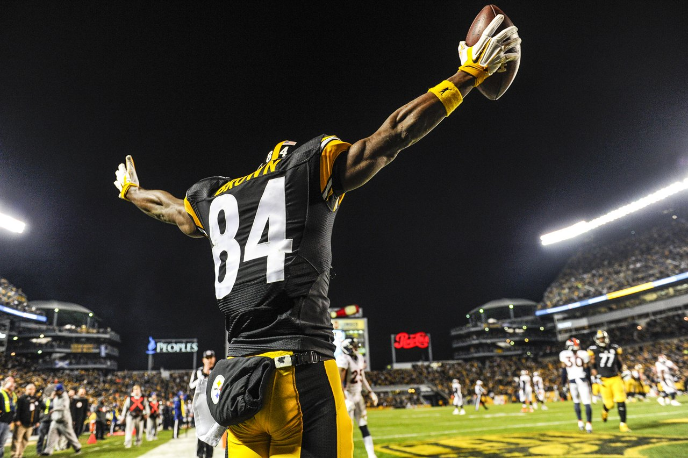

My Interests and Hobbies

One of my hobbies is swimming. I currently swim on North Coast Aquatics, a competitive swim team located in San Diego. I love swimming since it is a very competitive sport and I like to race others.

My favorite football team is the Steelers. They are a great team and could possibly win the Superbowl this year.